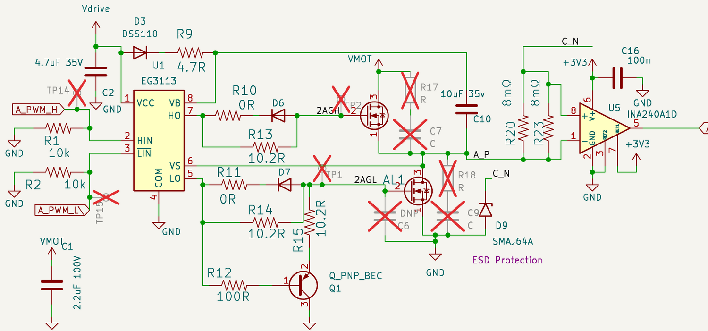

GaN Power Stage Evaluation — EPC23102
What happens if four EPC23102 ePower Stage ICs replace the 8×BSC030N08NS5 + 4×EG3113 power stage · sourcing, BOM, loss/thermal, layout, and the four things that would have to change · 2026-08-11
1 · The part
EPC23102 is a monolithic GaN half-bridge: input logic interface, level shifter, synchronous bootstrap charging, both gate drivers, and both power FETs on one die in a 3.5 × 5 mm QFN-13. The headline "35 A" is a 1 MHz DC/DC figure with a top-side heatsink and 500 LFM of airflow — see §4 for the number that actually applies to us.
| Parameter | EPC23102 | Current stage (per bridge) |
|---|---|---|
| Topology | Monolithic GaN half-bridge + driver + level shift + sync bootstrap | 2× BSC030N08NS5 + EG3113 + boot diode + 7 R + 2 clamp D + PNP |
| RDS(on) @ 25 °C | 5.2 mΩ typ / 6.6 max, each side | 2.6/3.4 mΩ @ VGS=10 V; 3.0/4.5 mΩ @ 6 V |
| Voltage | 100 V abs max, 80 V recommended operating, no avalanche | 80 V, 100% avalanche tested |
| Package | QFN-13, 3.5 × 5 mm, exposed top-side die, wettable flanks, MSL1 | 2× PowerPAK SO-8 (5 × 6) + SOIC-8 driver |
| Bias supply | 5 V VDRV (4.75–5.5, abs max 6) | Vdrive = 5.04 V (XL7005A, 1.25 V ref, R5/R6 = 10k/3.3k) |
| Logic | HSIN/LSIN both active-high, VIH 2.4 V, internal 5 kΩ pull-downs | HIN active-high, LIN active-low with 5 V pull-up |
| Dead time | None — only a 5 ns cross-conduction lockout | EG3113 interlock (firmware comment: "no interlock" in practice) |
| Bootstrap | Internal synchronous FET (1.7 Ω) — no external diode | D3 DSS110 + R9 4.7 Ω + C10 10 µF |
| Pulse width | 30 ns < ON < 200 µs, same for OFF, both sides | Unlimited DC on either side |
| Thermal | RθJC_top 0.4 · RθJB 3 · RθJA 43 (JEDEC) / 25 (EVB) °C/W | Bottom drain pad only, ~40 °C/W each on good copper |
| 3rd-quadrant drop | −1.7 to −2.1 V (−3.5 V with VDD=0) | Body diode ≈ −1.0 V |
| ESD | HBM ±500 V, CDM ±500 V (Class 1B) | Ordinary power MOSFET / SOIC driver |
current_test.cpp:110-117, high-side pulled in by dead_cycles, low-side
pushed out) rather than leaning on the driver, so the loss of the EG3113's interlock costs us nothing.
2 · Sourcing — the headline
| Part | LCSC | Stock | Min buy | $ @100 | Library |
|---|---|---|---|---|---|
| EPC23102 | C5160232 | 1 | 1 | $9.31 | Extended / shop |
| EPC23102ENGRT | C5729483 | 0 | 1 | $14.18 | Extended (obsolete at DigiKey) |
| BSC030N08NS5 | C501507 | 27,306 | 1 | $0.595 | Extended |
| EG3113 | C480666 | 9 | 25 | $0.280 | Extended |
DigiKey is cheaper and actually stocked — 7,015 units, $8.57 @1, $6.16 @25, $5.63 @100, $4.95 on full 3,000-piece reels. But the LCSC line is what matters for this project's stated promise: "you can order them yourself at cost by uploading a zip file to JLCPCB for under $50 per board QTY 10." Four parts per board with a catalog stock count of one, at 65% over DigiKey's price, means consigning parts to JLCPCB — which is a different product than what the README sells.
EG3113D and the
JLCPCB-assembly DFN8 variant are both at zero. That is a live sourcing problem in the current design
regardless of what we decide about GaN, and it is arguably the strongest argument for looking at an
integrated stage in the first place. Filed as F-40.
3 · BOM delta

Vdrive and
the two FET gates — D3, R9, C10, U1, C2, R10, D6, R13, R11, D7, R14, R15, R12, Q1 — is what the
EPC23102 absorbs onto its die.| Per board | Today | EPC23102 | Δ |
|---|---|---|---|
| Components in the gate/power path | 64 | 32 | −32 |
| Package footprint (FETs + driver) | 316 mm² | 70 mm² | −3.4× |
| Cost, LCSC @100 | $6.60 | $37.7 | +$31.1 |
| Cost, DigiKey @100 | $6.60 | $23.0 | +$16.4 |
On a sub-$50 board the power stage goes from roughly 13% of BOM to 40%.
4 · Loss and thermal — the actual trade
Per bridge at 20 A phase current, 60 V bus, 20 kHz, ~100 °C junction. Conduction numbers are datasheet-grounded; switching numbers are engineering estimates, ±50%.
| Per bridge | Silicon @ 5 V gate | EPC23102 | Why |
|---|---|---|---|
| Conduction | 2.2 W | 3.0 W (3.8 worst-case) | 5.2 mΩ vs ~3.5 mΩ, ×1.45–1.6 hot |
| Switching | ~2.0 W | 0.2 W | ~95 ns edges vs ~5 ns |
| Qrr / 3rd-quadrant | 0.12 W | 0.08 W | GaN has no reverse recovery |
| Total | ~4.4 W | ~3.3 W | −25% |
| Dissipating area | 60 mm² | 17.5 mm² | |
| Power density | 0.073 W/mm² | 0.189 W/mm² | 2.6× higher |
GaN loses on conduction and wins big on switching — but only because our silicon is driven badly. At VGS=5 V with VGS(th) as high as 3.8 V, the Miller-plateau gate current through R13/R14 (10.2 Ω) is only about (5 − 3.2)/11.5 ≈ 155 mA, and Qgd ≈ 15 nC then takes ~95 ns to move. That is where the 2 W comes from, and it is not GaN's to claim — a 10–12 V gate rail recovers most of it. See F-41.
So the honest framing is: 25% less loss, concentrated 2.6× harder. It is a heat-concentration problem, not a loss problem.
The flip side is real and in GaN's favour. RθJC_top = 0.4 °C/W is exceptional — the die backside is exposed through the top of the package. A PowerPAK SO-8 dumps heat out of its bottom drain pad into the PCB and gives you no comparable top-side path. Our four bridges already sit in a tidy column (x ≈ 139–145 mm, y ≈ 87–123 mm on F.Cu), so one heatsink bar with TIM covers all four. The datasheet even notes the exposed backside connects to PGND, so an electrically conductive TIM (40 W/m·K, cheaper) is allowed. If we are willing to add a heatsink, the GaN version could exceed 20 A continuous where the silicon version cannot — but "add a heatsink" is a new mechanical part and assembly step, and that too breaks upload-a-zip-and-go.
5 · Layout implications
Wins
- Gate loops vanish entirely. Today the drivers (U1/U6/U7/U12) sit on B.Cu directly under the FETs on F.Cu, so every gate and every return via-hops the 6-layer stack. That parasitic path is precisely why the design needs 10.2 Ω series, clamp diodes D6/D7, and a PNP turn-off booster Q1. All of it becomes on-die interconnect.
- The stackup is already right for GaN. F.Cu → In1.Cu is 0.1 mm prepreg with 2 oz outer copper — put the return plane on In1 and the power loop is about as tight as FR4 gets.
- The bottom side under the power stage frees up: four SOIC-8, four SOD-123F, and ~28 passives.
- Package creepage is pre-solved: EPC spaces the HV and LV pads ≥0.6 mm for IPC 100 V rules.
New constraints
- Input capacitance is currently inadequate for this. All four bridges share C1, C8, C44 (2.2 µF 1206) and C81 (1 µF 0603) plus the three 100 µF THT bulk cans. That is thin for silicon; for GaN di/dt each IC wants its own CIN within a couple of millimetres of its VIN/PGND bars.
- Do not shrink the copper. Component footprint drops 3.4×, but the copper is the heatsink. The freed bottom side should become thermal via field and return plane, not new component real estate.
- RθJB = 3 °C/W is only reachable with a dense via field under all three power bars, and solder voiding under those bars directly degrades it — a step up in process sensitivity from PowerPAK SO-8, though the wettable flanks and MSL1 rating help.
6 · Four things that would have to change
HIGH 6.1 · TVS strategy — GaN has no avalanche
The whole board philosophy is "80 V silicon with TVS breakdown just below it, so surges hit the TVS before any FET avalanches." That works because the BSC030N08NS5 is 100% avalanche tested — exceeding 80 V briefly is survivable. GaN has no avalanche mechanism at all: 100 V is a cliff.
SMAJ64A breaks down at 71–79 V (fine) but clamps to 103 V at its 3.9 A rated pulse — above abs max. The fix is not a different standoff voltage, it is more silicon: move the phase TVS to a 1500 W part (SMCJ64A clamps to the same 103 V but at 14.6 A, so at any given surge current it clamps lower). The bus SMDJ64A is already the high-power part. Normal switching overshoot is not the problem — EPC claims <+10 V above rail with tuned RBOOT/RDRV, i.e. 70 V on a 60 V bus.
Realistically this becomes a 48 V-class board, matching EPC's own reference designs. The 72 V-bus variant documented in the README is off the table entirely.
MED 6.2 · Logic polarity
EG3113 takes HIN + LIN; EPC23102 takes HSIN and
LSIN both active-high. Schematic: the four *_PWM_L\ nets lose their overbar.
Firmware: one line — pwm_config_set_output_polarity(&cfg, false, true) in
init_half_bridge(), since the driver no longer does the inversion. Also tie VDD to
VDRV (drops minimum bus voltage from 10 V to 0 V and disables standby) and leave STB open — it
has a 200 kΩ internal pull-down. Do not tie STB to VDD unless VDD and
VDRV are tied; the datasheet says that damages the IC.
HIGH 6.3 · The fail-safe brake cannot be carried over
This is the real blocker. From main.cpp:80-90:
"At reset/crash the gate-driver input pulls turn the low FET on, which shorts the chopper harmlessly (both resistor ends grounded) while plug-braking the motor — fail-safe with no firmware alive."
EPC23102 requires 30 ns < ON < 200 µs on both sides — the internal gate-drive capacitors CB1 need refreshing. You cannot DC-hold a FET on. A static pull-up on LSIN would violate that indefinitely; the brake would silently release, plausibly with the FET drifting through its linear region on the way out.
What survives: braking as "PWM the low side at 95% duty", which is fine while firmware runs — and we
already do exactly this shape of thing (BRAKE_MAX_DUTY 0.95f // preserve bootstrap refresh),
just for a much looser reason. What does not survive: the DNP hardware E-stop (Q6 + R113, RUN low → brake
with no firmware in the loop). Restoring it needs an external oscillator or watchdog to keep chopping
LSIN when the MCU is dead — more parts, eating into the −32.
A 2.2 kΩ pull-up to 5 V still wins against the internal 5 kΩ pull-down (3.5 V > VIH 2.4 V) at 2.3 mA per bridge, so the boot-time default can still be "low side on" — it just cannot be a sustained state.
HIGH 6.4 · Current sense sees 19× the dV/dt
The INA240s sit directly on the switch node with no input filter at all — U5 pin 1 goes
straight to A_P, pin 8 straight to the phase output, across the 2×8 mΩ shunt. Inline sensing
means the amplifier eats the full switch-node slew as common mode.
| Edge rate at the INA240 input | Today | EPC23102 @ 10 Ω |
|---|---|---|
| 60 V transition | ~95 ns → ~630 V/µs | ~5 ns → ~12,000 V/µs |
INA240's "enhanced PWM rejection" is not characterised anywhere near 12 kV/µs. Expect large common-mode-induced output disturbance and long settling, which pushes the ADC sample point further from the edge and eats FOC bandwidth. Mitigations — a differential RC in front of the amplifier, and raising RDRV/RBOOT above 10 Ω to slow the edges — both spend the switching-loss win we came for. There is ~2 W of margin to spend, so this is survivable, but it wants bench validation before anyone commits copper.
Secondary, and the least quantifiable: 12 kV/µs at 60 V on phase leads leaving through XT30 connectors with no common-mode chokes is a real step change in conducted and radiated EMI.
7 · Findings this turned up
HIGH F-40 (candidate) — EG3113 is effectively unbuyable.
LCSC C480666: 9 in stock, minimum purchase 25. EG3113D (C2929097)
and the JLCPCB-assembly DFN8 variant are both at 0. The board needs four per unit. Until this is resolved
the current design cannot be ordered at the advertised QTY 10 either.
Next step: qualify a pin-compatible SOIC-8 half-bridge driver at ≥80 V with stock depth. This is independent of the GaN question and should not wait on it.
MED F-41 (candidate) — the FETs are driven 5 V below their characterisation point. BSC030N08NS5 is specified 2.6/3.4 mΩ at VGS=10 V and 3.0/4.5 mΩ at 6 V, with VGS(th) spanning 2.2–3.8 V. Vdrive is 5.04 V, so we are below even the 6 V spec point, and a high-Vth part sits close to the knee. Estimated cost: RDS(on) ~15% worse than the 6 V number, plus ~2 W per bridge of switching loss from ~95 ns edges — call it 8 W across the board at 20 A, which is most of the thermal headroom.
Complication: Vdrive cannot simply be raised. It also feeds the thirteen TS5A3159 analog switches that sit on it (5.5 V max, 6 V abs max), the SPX3819 3.3 V LDO, and the WS2812 via a Schottky drop. A gate-drive rail at 10–12 V would need to be a separate output. EG3113 accepts 2.8–20 V VCC, so the driver side is already capable.
Next step: measure a real switching edge on a built board before believing the 2 W estimate — it is derived, not observed.
Amended 2026-08-12 — current budget rescoped to 20 A continuous, with a 10 A precision mode. F-41 stands unchanged; the remedy ranking does not.
Rescoping the bridge away from "50 A" changes nothing in the analysis above, because 20 A was already the analysis point. The schematic note has always read "20 Amp max continuous current draw (estimated, depends on thermals) / 50 Amp peak absolute maximum" — the 50 A was the peak abs-max, never the continuous design target, and the 8 W figure above is the 20 A number.
The sense chain agrees, and always did: 2× 8 mΩ in parallel per phase (R20/R23, R39/R40, R55/R56, all 2512) into an INA240A1 at 20 V/V gives 80 mV/A → ±20.6 A full scale against a 1.65 V-referenced 3.3 V ADC. Desoldering one shunt per phase leaves 8 mΩ → 160 mV/A → ±10.3 A, a clean 2× in gain. Derivation in power §1. The "50 A bridge" was only ever the FET and copper sizing.
What the 10 A mode does change — conduction goes as I², switching as I:
| Per bridge, 20 kHz | @ 20 A | @ 10 A |
|---|---|---|
| Conduction | 2.2 W | 0.55 W |
| Switching (the F-41 penalty) | ~2.0 W | ~1.0 W |
| Total (incl. Qrr) | ~4.4 W | ~1.6 W |
In the 10 A mode F-41 is moot and a separate rail cannot be justified. At 20 A it stands as written.
New — the gate resistors are a cheaper lever than the rail. R13/R14 = 10.2 Ω is the direct cause of the 95 ns edge. Running the same plateau model backwards ((Vdrive − 3.2) / (Rg + 1.3) into Qgd ≈ 15 nC):
| Gate R | Rail | Plateau I | Edge | Switching W/bridge |
|---|---|---|---|---|
| 10.2 Ω (as built) | 5 V | 155 mA | 95 ns | 2.0 W |
| 5.1 Ω | 5 V | 281 mA | 53 ns | ~1.1 W |
| 2.2 Ω | 5 V | 514 mA | 29 ns | ~0.6 W |
| 10.2 Ω | 10 V | 591 mA | 25 ns | ~0.5 W |
2.2 Ω lands within a few ns of what the 10 V rail buys, for two resistor values per bridge and no new regulator. The rail additionally recovers the RDS(on) penalty (~0.5 W/bridge, ~2 W board-wide) that a resistor change cannot touch — but that is the smaller half of the 8 W.
A firm 20 A ceiling instead of a 50 A peak is what makes the faster edges arguable: less power-loop di/dt to fear. The limiter is not current, it is the gate loop — drivers on B.Cu directly under the FETs, via-hopping the stack, which is exactly why D6/D7 and the Q1 turn-off booster exist. With VGS(th) as low as 2.2 V, dV/dt-induced shoot-through through Cgd is what will actually set the floor. Same caveat as everything else here: derived, not measured.
One convergence worth a bench check: 95 ns edges eat the INA240's settling window, so faster edges serve the very current-sense fidelity the 10 A mode exists for. Higher dV/dt cuts the other way on CMRR — which is what the INA240's enhanced PWM rejection is for. Measure both.
Revised remedy order (was: "measure the edges, then decide about a 10–12 V gate rail"):
- Measure a real switching edge. Unchanged, still first, still gates everything below.
- Gate-resistor sweep 10.2 → 5.1 → 2.2 Ω, watching for dV/dt shoot-through. Free, testable on hardware that already exists, recovers most of the 8 W. New — enabled by the lower current ceiling.
- FET respec at the next BOM touch. A part characterised at VGS=4.5 V makes 5 V the characterisation point and dissolves F-41 outright; lower Qgd cuts switching loss independent of the rail. Costs: reopens the recorded decision in F-11 ("FETs stay BSC030N08NS5"), 80 V logic-level parts are thinner on the ground than 60 V, and the 50 A peak rating must survive for stall/startup.
- Separate 10–12 V gate rail. Demoted to last resort. Still the only option that fixes conduction as well as switching, but it buys ~2 W more than step 2 in exchange for a whole new regulator — and it must not be done by raising Vdrive (see Complication above).
8 · Decision
| Dimension | EPC23102 | Verdict |
|---|---|---|
| Sourcing at LCSC | Stock 1, $9.31, Extended/shop | BLOCKER breaks the JLCPCB promise |
| Cost | +$16–31/board | BLOCKER 40% of BOM |
| Fail-safe brake | 200 µs max ON kills the DC hold | BLOCKER safety regression |
| 60 V bus | 80 V recommended, no avalanche | RETREAT to 48 V class |
| Current sense | 19× dV/dt into an unfiltered INA240 | RISK needs bench work |
| Part count | −32 per board | WIN |
| Gate-loop parasitics | Eliminated entirely | WIN |
| Total loss | −25% at 20 A / 20 kHz | WIN (mostly by fixing a gate-drive flaw) |
| Thermal path | RθJC_top 0.4 °C/W, one bar over four ICs | WIN if a heatsink is acceptable |
Not for rev-C. The blockers are structural, not fixable by layout effort, and two of them (price, stock) are outside our control. Revisit if EPC gets real LCSC stock depth, or if the project ever forks a "performance" variant that drops the upload-a-zip constraint, accepts a heatsink, targets 48 V, and runs at 100 kHz+ where GaN's switching advantage actually compounds instead of merely compensating for a weak gate drive.
Do next, independent of GaN: F-40 (find a buyable gate driver) is urgent and blocks ordering today. F-41 (measure the switching edges, then sweep the gate resistors) is the cheap version of most of what GaN was offering — and per the 2026-08-12 amendment it is now cheaper still: at a 20 A ceiling the resistor sweep recovers most of the 8 W for zero BOM cost, and the 10–12 V rail drops to last resort.